Last updated: 2018-08-03
workflowr checks: (Click a bullet for more information) ✔ R Markdown file: up-to-date
Great! Since the R Markdown file has been committed to the Git repository, you know the exact version of the code that produced these results.
✔ Environment: empty
Great job! The global environment was empty. Objects defined in the global environment can affect the analysis in your R Markdown file in unknown ways. For reproduciblity it’s best to always run the code in an empty environment.
✔ Seed:
set.seed(20180731)
The command set.seed(20180731) was run prior to running the code in the R Markdown file. Setting a seed ensures that any results that rely on randomness, e.g. subsampling or permutations, are reproducible.
✔ Session information: recorded
Great job! Recording the operating system, R version, and package versions is critical for reproducibility.
✔ Repository version: 2689835
wflow_publish or wflow_git_commit). workflowr only checks the R Markdown file, but you know if there are other scripts or data files that it depends on. Below is the status of the Git repository when the results were generated:
Ignored files:
Ignored: .DS_Store
Ignored: .Rhistory
Ignored: .Rproj.user/
Ignored: data/.DS_Store
Ignored: inst/.DS_Store
Ignored: inst/doc/.DS_Store
Ignored: vignettes/.DS_Store
Untracked files:
Untracked: Clustering_analyses_figure4_islets_sv1_3.pdf
Untracked: docs/figure/hidden_heterogeneity_glioblastoma.Rmd/
Untracked: docs/figure/tSNE_post_IA-SVA_3celltypes.Rmd/
Untracked: docs/figure/tSNE_post_IA-SVA_Xin_Islets.Rmd/
Untracked: output/CC_genes.long.txt
Untracked: output/CC_genes.short.txt
Untracked: output/Clustering_analyses_figure3_sv1.pdf
Untracked: output/Clustering_analyses_figure4_Xin.pdf
Untracked: output/Clustering_analyses_figure4_Xin_sv1.pdf
Untracked: output/FigureS11_Xin_Islets_AllCells_IASVA_Markers_pheatmap.pdf
Untracked: output/Lawlor_Islets_3Cells_CellView_Seurat_FigS.pdf
Untracked: output/Lawlor_Islets_3Cells_IASVA_SV1SV3_rsqcutoff0.3_pheatmap_iasvaV0.95_Figure4_C.pdf
Untracked: output/Lawlor_Islets_3Cells_IASVA_SV4_rsqcutoff0.3_pheatmap_iasvaV0.95.pdf
Untracked: output/Lawlor_Islets_3Cells_IASVA_pairs4SVs_iasvaV0.95_black_FigS6.pdf
Untracked: output/Lawlor_Islets_3Cells_IASVA_pairs4SVs_iasvaV0.95_color_FigS6.pdf
Untracked: output/Lawlor_Islets_3Cells_SV1_SV3_Cell_Type_Genes_rsqcutoff0.3.txt
Untracked: output/Lawlor_Islets_3Cells_SV4_Genes_rsqcutoff0.3.txt
Untracked: output/Lawlor_Islets_3Cells_tSNE_IA-SVA_Fig4AB.pdf
Untracked: output/Patel_Glioblastoma_MGH30_CellCycle_Figure3ABCD.pdf
Untracked: output/Patel_Glioblastoma_MGH30_Cellcycle_SV1_Genes_rsqcutoff0.3.txt
Untracked: output/Patel_Glioblastoma_MGH30_Cellcycle_SV1_Genes_rsqcutoff0.4.txt
Untracked: output/Patel_Glioblastoma_MGH30_iasva_SV1_genes_rsqcutoff0.3_pheatmap_iasvaV0.95_Figure3F.pdf
Untracked: output/Xin_Islets_AllCells_IASVA.pdf
Untracked: output/Xin_Islets_AllCells_IASVA_nocolor.pdf
Untracked: output/Xin_Islets_AllCells_PCA.pdf
Untracked: output/Xin_Islets_AllCells_SV1_Genes_rsqcutoff0.2.txt
Untracked: output/Xin_Islets_AllCells_SV1_Genes_rsqcutoff0.3.txt
Untracked: output/Xin_Islets_AllCells_SV3_Genes_rsqcutoff0.2.txt
Untracked: output/Xin_Islets_AllCells_SV3_Genes_rsqcutoff0.3.txt
Untracked: output/Xin_Islets_AllCells_USVA.pdf
Untracked: output/Xin_Islets_AllCells_tSNEByKnownFactors_FigureS9.pdf
Untracked: output/Xin_Islets_All_demensionality_reduction_Figure4DEFG.pdf
Here, we becnhmark several factor analyses methods on single cell RNA sequencing (scRNA-Seq) data obtained from human human brain samples (Darmanis et. al., 2015). All of these methods are used to uncover variation associated with different cell types and compared against each other. This dataset is included in an R data package (“iasvaExamples”) containing data examples for IA-SVA (https://github.com/dleelab/iasvaExamples). To install the ‘iasvaExamples’ package, follow the instructions provided in the GitHub page.
rm(list=ls())
library(iasva)
library(iasvaExamples)
library(sva)
library(RUVSeq)
library(Rtsne)
library(pheatmap)
library(corrplot)
library(DescTools) #pcc i.e., Pearson's contingency coefficient
library(RColorBrewer)
library(zinbwave)
library(nnet)
library(SummarizedExperiment)
color.vec <- brewer.pal(8, "Set1")
set.seed(3532379)
# To make the task more challenging we selected
#1000 genes to be used in downstream analyses.
num.genes <- 1000data("Darmanis_Brain_scRNAseq_Read_Counts")
data("Darmanis_Brain_scRNAseq_Annotations")
ls()[1] "color.vec"
[2] "Darmanis_Brain_scRNAseq_Annotations"
[3] "Darmanis_Brain_scRNAseq_Read_Counts"
[4] "num.genes" counts.total <- Darmanis_Brain_scRNAseq_Read_Counts
anns.total <- Darmanis_Brain_scRNAseq_Annotations
dim(anns.total)[1] 461 6dim(counts.total)[1] 23267 461summary(anns.total) run tissue cell_type
SRR1974543: 1 cortex :426 neurons :129
SRR1974544: 1 hippocampus: 35 fetal_quiescent :109
SRR1974545: 1 astrocytes : 62
SRR1974546: 1 hybrid : 46
SRR1974547: 1 oligodendrocytes : 37
SRR1974548: 1 fetal_replicating: 25
(Other) :455 (Other) : 53
age c1_chip_id sample_name
prenatal 16-18 W :133 nochipID2 : 77 AB_S4 : 77
postnatal 50 years: 77 nochipID8 : 55 AB_S11 : 62
postnatal 37 years: 62 nochipID11: 45 AB_S8 : 57
postnatal 54 years: 57 1772078217: 33 AB_S7 : 55
postnatal 21 years: 55 1772078236: 33 FB_S2 : 45
postnatal 63 years: 49 nochipID13: 33 AB_S5 : 44
(Other) : 28 (Other) :185 (Other):121 table(anns.total$tissue, anns.total$cell_type)
astrocytes endothelial fetal_quiescent fetal_replicating
cortex 62 17 109 25
hippocampus 0 3 0 0
hybrid microglia neurons oligodendrocytes OPC
cortex 44 8 128 31 2
hippocampus 2 7 1 6 16ContCoef(table(anns.total$tissue, anns.total$cell_type))[1] 0.5794563table(anns.total$age, anns.total$cell_type)
astrocytes endothelial fetal_quiescent
postnatal 21 years 3 0 0
postnatal 22 years 0 1 1
postnatal 37 years 7 1 0
postnatal 47 years 11 2 0
postnatal 50 years 38 0 0
postnatal 54 years 1 0 0
postnatal 63 years 2 16 0
prenatal 16-18 W 0 0 108
fetal_replicating hybrid microglia neurons
postnatal 21 years 0 7 0 34
postnatal 22 years 0 0 0 2
postnatal 37 years 0 3 1 49
postnatal 47 years 0 0 5 6
postnatal 50 years 0 19 0 19
postnatal 54 years 0 17 6 0
postnatal 63 years 0 0 3 19
prenatal 16-18 W 25 0 0 0
oligodendrocytes OPC
postnatal 21 years 11 0
postnatal 22 years 0 0
postnatal 37 years 1 0
postnatal 47 years 0 0
postnatal 50 years 1 0
postnatal 54 years 15 18
postnatal 63 years 9 0
prenatal 16-18 W 0 0ContCoef(table(anns.total$age, anns.total$cell_type))[1] 0.8256324table(anns.total$sample_name, anns.total$cell_type)
astrocytes endothelial fetal_quiescent fetal_replicating hybrid
AB_S1 11 2 0 0 0
AB_S11 7 1 0 0 3
AB_S2 2 0 0 0 0
AB_S3 0 1 1 0 0
AB_S4 38 0 0 0 19
AB_S5 0 16 0 0 0
AB_S7 3 0 0 0 7
AB_S8 1 0 0 0 17
FB_S1 0 0 5 21 0
FB_S2 0 0 43 2 0
FB_S3 0 0 33 0 0
FB_S6 0 0 27 2 0
microglia neurons oligodendrocytes OPC
AB_S1 5 6 0 0
AB_S11 1 49 1 0
AB_S2 2 1 0 0
AB_S3 0 2 0 0
AB_S4 0 19 1 0
AB_S5 1 18 9 0
AB_S7 0 34 11 0
AB_S8 6 0 15 18
FB_S1 0 0 0 0
FB_S2 0 0 0 0
FB_S3 0 0 0 0
FB_S6 0 0 0 0ContCoef(table(anns.total$sample_name, anns.total$cell_type))[1] 0.8602264table(anns.total$c1_chip_id, anns.total$cell_type)
astrocytes endothelial fetal_quiescent fetal_replicating
1772078217 1 0 0 0
1772078218 0 0 0 0
1772078236 2 0 0 0
1772078237 5 1 0 0
nochipID10 0 0 5 21
nochipID11 0 0 43 2
nochipID12 1 2 0 0
nochipID13 0 0 33 0
nochipID14 2 0 0 0
nochipID15 0 1 1 0
nochipID2 38 0 0 0
nochipID3 0 13 0 0
nochipID4 0 0 27 2
nochipID5 0 3 0 0
nochipID8 3 0 0 0
nochipID9 10 0 0 0
hybrid microglia neurons oligodendrocytes OPC
1772078217 15 0 0 15 2
1772078218 2 6 0 0 16
1772078236 3 1 26 1 0
1772078237 0 0 23 0 0
nochipID10 0 0 0 0 0
nochipID11 0 0 0 0 0
nochipID12 0 2 0 0 0
nochipID13 0 0 0 0 0
nochipID14 0 2 1 0 0
nochipID15 0 0 2 0 0
nochipID2 19 0 19 1 0
nochipID3 0 0 17 3 0
nochipID4 0 0 0 0 0
nochipID5 0 1 1 6 0
nochipID8 7 0 34 11 0
nochipID9 0 3 6 0 0ContCoef(table(anns.total$c1_chip_id, anns.total$cell_type))[1] 0.8802176The annotations describing samples and experimental settings are stored in “anns” and the read counts information is stored in “counts”.
For the downstream analyses, select neurons, oligodendrcytes and astrocytes from 2 cell types and 8 individuals.
# Select neurons and astrocytes for downstream analyses
selected.cells <- intersect(which(anns.total$tissue=="cortex"),
which(anns.total$cell_type=="neurons"|anns.total$cell_type=="astrocytes"))
counts <- counts.total[, selected.cells]
anns <- droplevels(anns.total[selected.cells,])
table(anns$tissue, anns$cell_type) astrocytes neuronscortex 62 128
table(anns$tissue, anns$age) postnatal 21 years postnatal 22 years postnatal 37 yearscortex 37 2 56
postnatal 47 years postnatal 50 years postnatal 54 yearscortex 17 57 1
postnatal 63 yearscortex 20
table(anns$age, anns$sample_name) AB_S1 AB_S11 AB_S2 AB_S3 AB_S4 AB_S5 AB_S7 AB_S8postnatal 21 years 0 0 0 0 0 0 37 0 postnatal 22 years 0 0 0 2 0 0 0 0 postnatal 37 years 0 56 0 0 0 0 0 0 postnatal 47 years 17 0 0 0 0 0 0 0 postnatal 50 years 0 0 0 0 57 0 0 0 postnatal 54 years 0 0 0 0 0 0 0 1 postnatal 63 years 0 0 3 0 0 17 0 0
table(anns$age, anns$c1_chip_id) 1772078217 1772078236 1772078237 nochipID12postnatal 21 years 0 0 0 0 postnatal 22 years 0 0 0 0 postnatal 37 years 0 28 28 0 postnatal 47 years 0 0 0 1 postnatal 50 years 0 0 0 0 postnatal 54 years 1 0 0 0 postnatal 63 years 0 0 0 0
nochipID14 nochipID15 nochipID2 nochipID3 nochipID8postnatal 21 years 0 0 0 0 37 postnatal 22 years 0 2 0 0 0 postnatal 37 years 0 0 0 0 0 postnatal 47 years 0 0 0 0 0 postnatal 50 years 0 0 57 0 0 postnatal 54 years 0 0 0 0 0 postnatal 63 years 3 0 0 17 0
nochipID9postnatal 21 years 0 postnatal 22 years 0 postnatal 37 years 0 postnatal 47 years 16 postnatal 50 years 0 postnatal 54 years 0 postnatal 63 years 0
table(anns$tissue, anns$c1_chip_id) 1772078217 1772078236 1772078237 nochipID12 nochipID14 nochipID15cortex 1 28 28 1 3 2
nochipID2 nochipID3 nochipID8 nochipID9cortex 57 17 37 16
table(anns$cell_type, anns$sample_name) AB_S1 AB_S11 AB_S2 AB_S3 AB_S4 AB_S5 AB_S7 AB_S8astrocytes 11 7 2 0 38 0 3 1 neurons 6 49 1 2 19 17 34 0
table(anns$cell_type, anns$tissue) cortexastrocytes 62 neurons 128
dim(counts)[1] 23267 190
dim(anns)[1] 190 6
dropout.rate <- sum(counts==0)/(dim(counts)[1]*dim(counts)[2])*100
dropout.rate[1] 66.32653
## Filter out lowly-expressed genes
filter = apply(counts, 1, function(x) length(x[x>5])>=3)
counts = as.matrix(counts[filter,])
dim(counts)[1] 21806 190
dropout.rate <- sum(counts==0)/(dim(counts)[1]*dim(counts)[2])*100
dropout.rate[1] 64.13206
# To make this task more challenging for benchamarking purposes
# we only used randomly selected 1000 genes in downstream analyses
rand.gene.list <- sample(1:nrow(counts), num.genes)
counts <- counts[rand.gene.list,]
Cell_Type <- anns$cell_type
Tissue <- anns$tissue
Cell_Type_Num <- as.integer(Cell_Type)
Samples <- as.integer(anns$sample_name)It is well known that the geometric library size (i.e., library size of log-transfromed read counts) or proportion of expressed genes in each cell explains very large portion of variability of scRNA-Seq data (Hicks et. al. 2015 BioRxiv, McDavid et. al. 2016 Nature Biotechnology). Frequently, the first principal component of log-transformed scRNA-Seq read counts is highly correlated with the geometric library size. (r > 0.9). Here, we calculate it and show the high correlation. Later this vector will be used as an known factor in IA-SVA algorithm.
Geo_Lib_Size <- colSums(log(counts+1))
barplot(Geo_Lib_Size, xlab="Cell")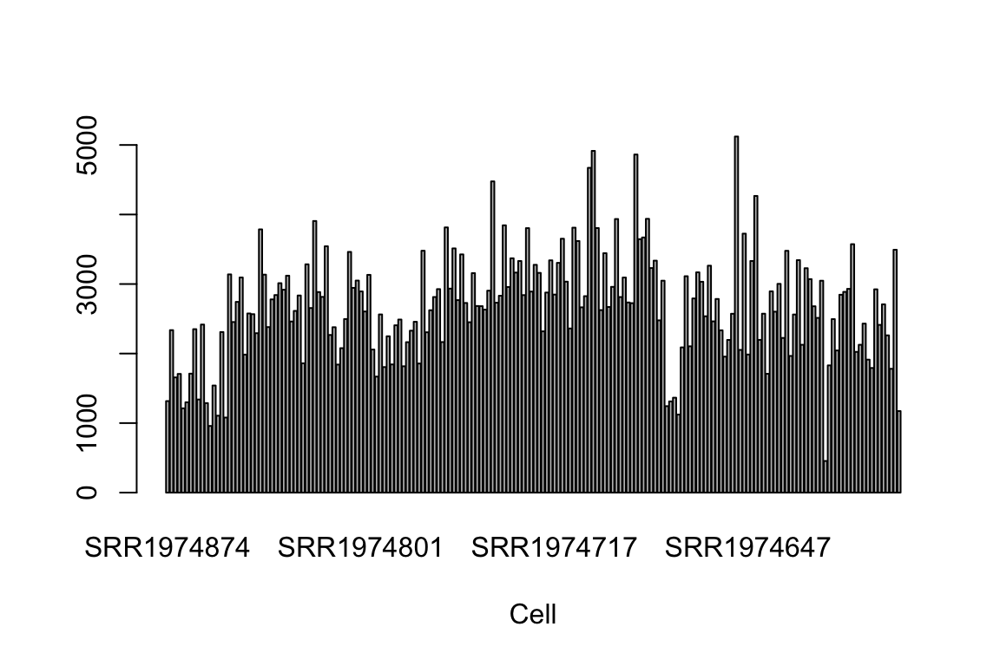
lcounts <- log(counts + 1)
pca.res = svd(lcounts - rowMeans(lcounts))$v
cor(Geo_Lib_Size, pca.res[,1])[1] 0.9435376cor(Geo_Lib_Size, Cell_Type_Num)[1] 0.1815641Library size, tissue, and sample ID are used as covariates in all factor analyses except for PCA. 3 SVs are captured with each method and the SV that has the maximum correlation with the cell type assignments is selected among these 3. This is especially important for a fair comparison of PCA.
mod1 = model.matrix(~Geo_Lib_Size+anns$sample_name)
mod0 = cbind(mod1[,1])
summ_exp <- SummarizedExperiment(assays = counts)
### IA-SVA
start_time <- Sys.time()
iasva.res<- iasva(summ_exp, mod1[,-1],verbose=FALSE, permute=FALSE, num.sv=3)IA-SVA running...
SV 1 Detected!
SV 2 Detected!
SV 3 Detected!
# of significant surrogate variables: 3end_time <- Sys.time()
iasva.time <- start_time - end_time
iasva.sv <- iasva.res$sv
plot(iasva.sv[,1], iasva.sv[,2],col=Cell_Type, xlab="SV1", ylab="SV2")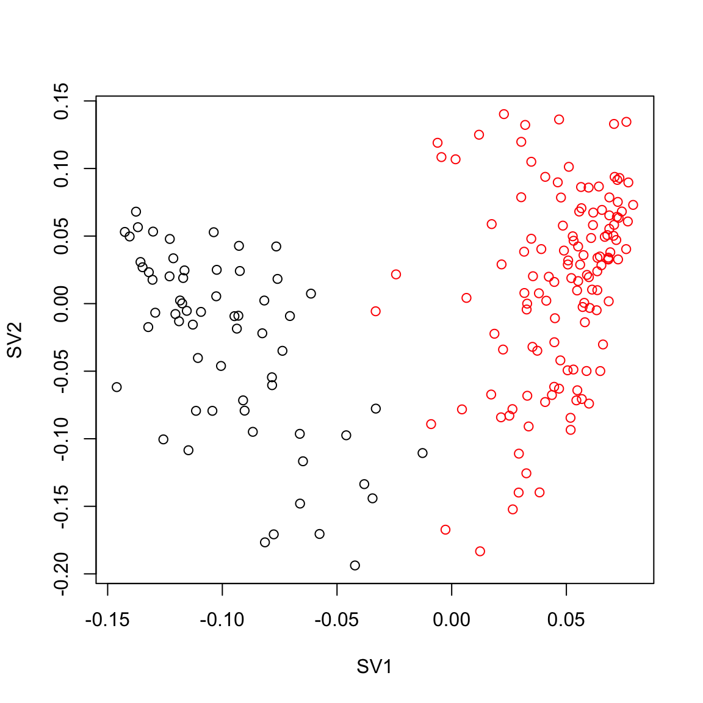
pairs(iasva.sv, col=Cell_Type, main="IA-SVA")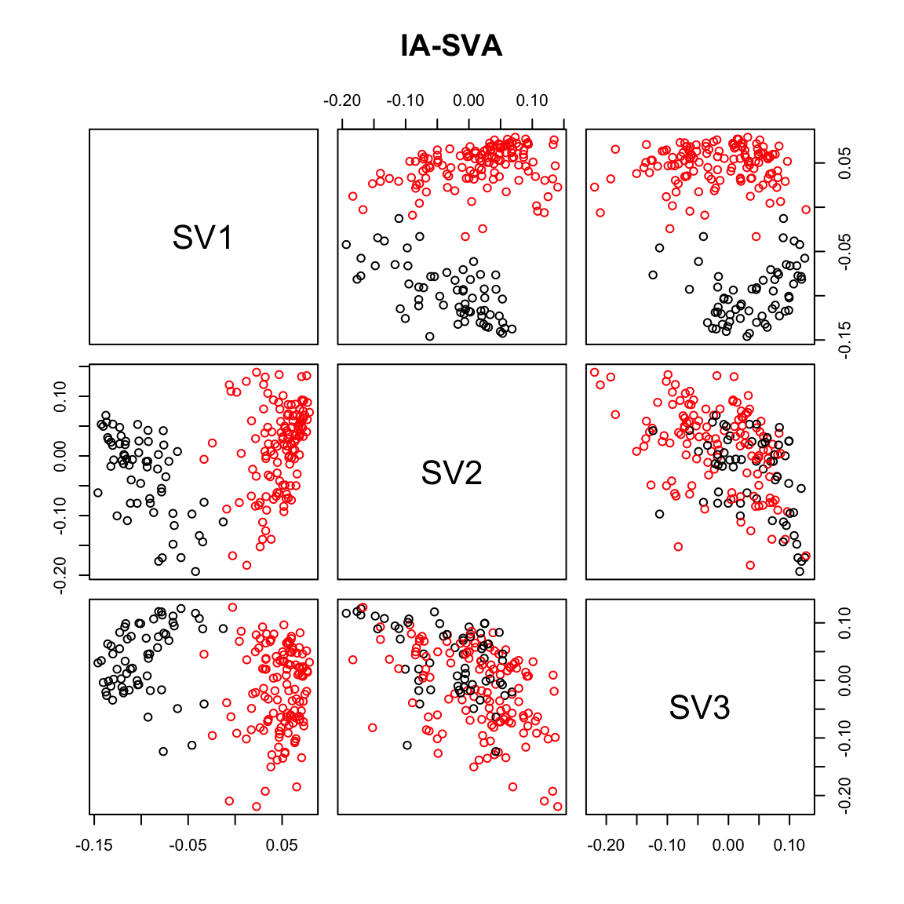
max.cor.iasva <- which.is.max(c(abs(cor(iasva.sv[,1], Cell_Type_Num)),
abs(cor(iasva.sv[,2], Cell_Type_Num)),
abs(cor(iasva.sv[,3], Cell_Type_Num))))
max.cor.iasva [1] 1## PCA
ldat0 = log(counts + 1)
start_time <- Sys.time()
pca.sv = svd(ldat0 - rowMeans(ldat0))$v
end_time <- Sys.time()
pca.time <- start_time - end_time
plot(pca.sv[,1], pca.sv[,2],col=Cell_Type, xlab="SV1", ylab="SV2")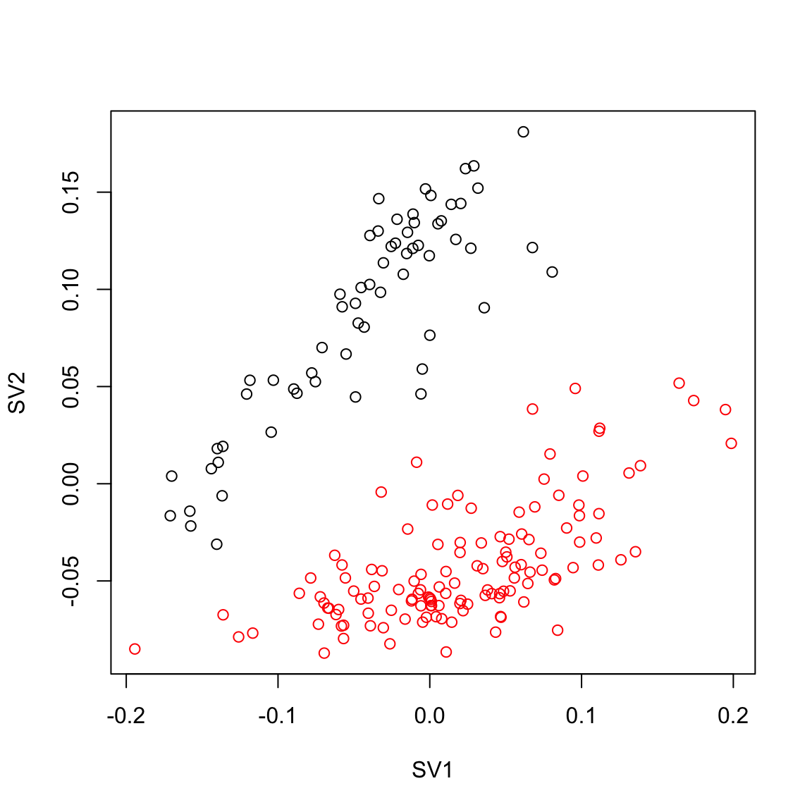
pairs(pca.sv[,1:3], col=Cell_Type, main="PCA")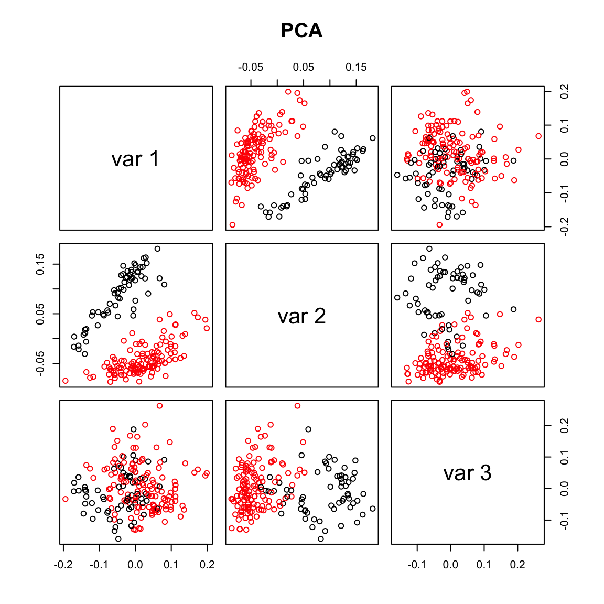
max.cor.pca <- which.is.max(c(abs(cor(pca.sv[,1], Cell_Type_Num)),
abs(cor(pca.sv[,2], Cell_Type_Num)),
abs(cor(pca.sv[,3], Cell_Type_Num))))
max.cor.pca[1] 2## USVA
start_time <- Sys.time()
usva.sv = svaseq(counts,mod1,mod0,n.sv=3)$svNumber of significant surrogate variables is: 3
Iteration (out of 5 ):1 2 3 4 5 end_time <- Sys.time()
usva.time <- start_time - end_time
plot(usva.sv[,1], usva.sv[,2],col=Cell_Type, xlab="SV1", ylab="SV2")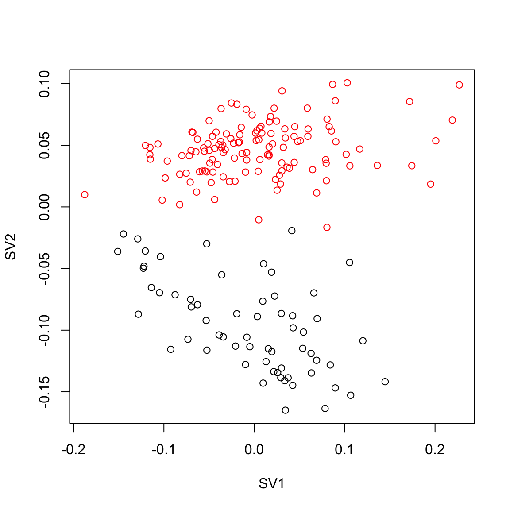
pairs(usva.sv[,1:3], col=Cell_Type, main="USVA")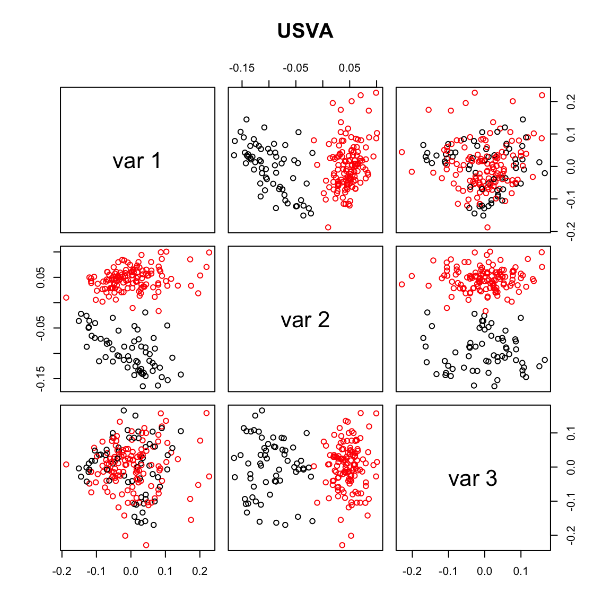
max.cor.usva <- which.is.max(c (abs(cor(usva.sv[,1], Cell_Type_Num)),
abs(cor(usva.sv[,2], Cell_Type_Num)),
abs(cor(usva.sv[,3], Cell_Type_Num))))
max.cor.usva[1] 2### RUVres
design <- model.matrix(~Geo_Lib_Size+anns$sample_name)
start_time <- Sys.time()
y <- DGEList(counts=counts)
y <- calcNormFactors(y, method="TMM")
y <- estimateGLMCommonDisp(y, design)
y <- estimateGLMTagwiseDisp(y, design)
fit <- glmFit(y, design)
res <- residuals(fit, type="deviance")
set <- betweenLaneNormalization(counts, which="upper")
genes = rep(TRUE,dim(counts)[1])
ruvres.sv = RUVr(set,genes,k=3,res,isLog = T)$W
end_time <- Sys.time()
ruvres.time <- start_time - end_time
plot(ruvres.sv[,1], ruvres.sv[,2],col=Cell_Type, xlab="SV1", ylab="SV2")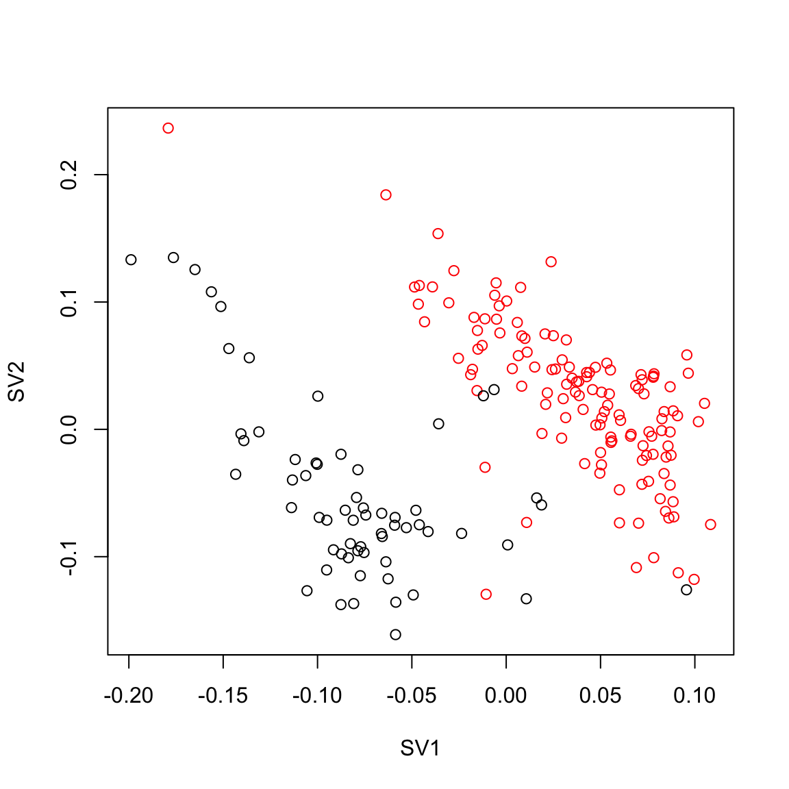
pairs(ruvres.sv[,1:3], col=Cell_Type)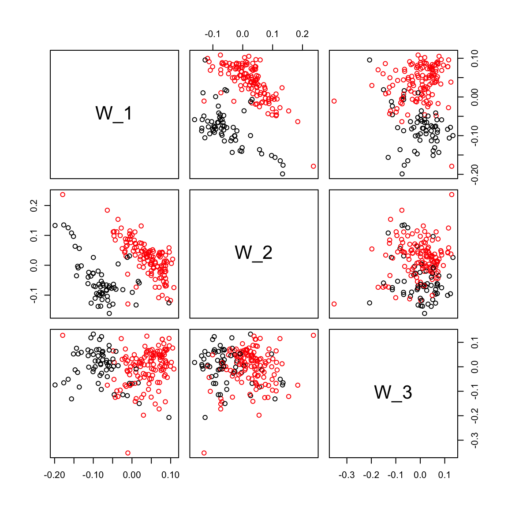
max.cor.ruvres <- which.is.max (c (abs(cor(ruvres.sv[,1], Cell_Type_Num)),
abs(cor(ruvres.sv[,2], Cell_Type_Num)),
abs(cor(ruvres.sv[,3], Cell_Type_Num))))
max.cor.ruvres[1] 1### RUVemp
start_time <- Sys.time()
y <- DGEList(counts=counts)
y <- calcNormFactors(y, method="TMM")
y <- estimateGLMCommonDisp(y, design)
y <- estimateGLMTagwiseDisp(y, design)
fit <- glmFit(y, design)
lrt <- glmLRT(fit, coef=2)
emp.genes =rank(lrt$table$LR) > 400
ruvemp.sv <- RUVg(counts, emp.genes, k=3)$W
end_time <- Sys.time()
ruvemp.time <- start_time - end_time
plot(ruvemp.sv[,1], ruvemp.sv[,2],col=Cell_Type, xlab="SV1", ylab="SV2")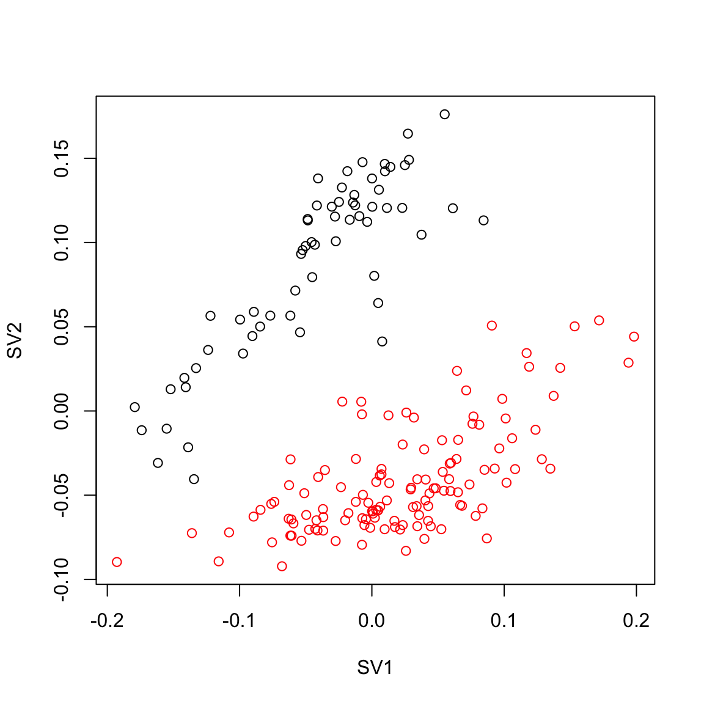
pairs(ruvemp.sv[,1:3], col=Cell_Type)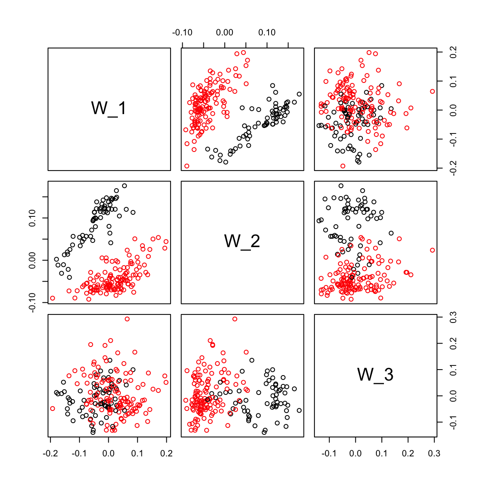
max.cor.ruvemp <- which.is.max(c (abs(cor(ruvemp.sv[,1], Cell_Type_Num)),
abs(cor(ruvemp.sv[,2], Cell_Type_Num)),
abs(cor(ruvemp.sv[,3], Cell_Type_Num))))
max.cor.ruvemp[1] 2### ZINB WAVE
se.data <- SummarizedExperiment(assays=list(counts=counts))
se.data$LS <- Geo_Lib_Size
se.data$SN <- anns$sample_name
se.data$Tissue <- anns$tissue
# use Geometric library size + Tissue + sample is as covariates
# suggested epsilon parameter is used for the analyses
start_time <- Sys.time()
zinb_cov <- zinbFit(se.data, K=3, X="~LS+SN", epsilon=1000)Warning in simpute.als(x, J, thresh, lambda, maxit, trace.it, warm.start, :
Convergence not achieved by 100 iterationsW <- getW(zinb_cov)
end_time <- Sys.time()
zinb.time <- start_time - end_time
colnames(W) <- paste0("W", 1:3)
pairs(W,col=Cell_Type)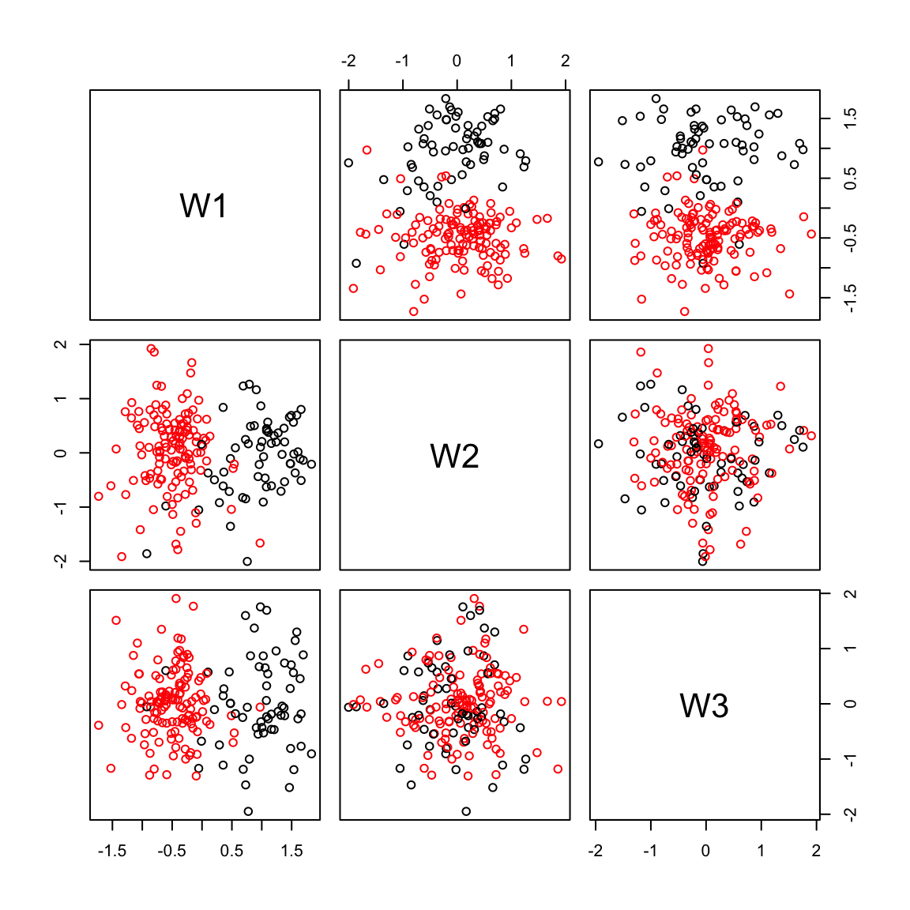
max.cor.zinb <- which.is.max (c (abs(cor(W[,1], Cell_Type_Num)),
abs(cor(W[,2], Cell_Type_Num)),
abs(cor(W[,3], Cell_Type_Num))))
max.cor.zinb[1] 1Compare results from different methods to the true cell type assignments using correlation plots.
## Plot correlation between true cell_type and estimates (SV1)
celltype.est = cbind(Cell_Type_Num, iasva.sv[,max.cor.iasva],
pca.sv[,max.cor.pca],usva.sv[,max.cor.usva],
ruvres.sv[,max.cor.ruvres],
ruvemp.sv[,max.cor.ruvemp], W[,max.cor.zinb])
colnames(celltype.est) = c("Cell Type","IA-SVA","PCA","USVA",
"RUVres","RUVemp", "ZINB-WAVE")
corr = abs(cor(celltype.est))
print(corr) Cell Type IA-SVA PCA USVA RUVres RUVemp
Cell Type 1.0000000 0.9364864 0.8412577 0.9217416 0.7647545 0.8358981
IA-SVA 0.9364864 1.0000000 0.9241849 0.9441659 0.7767147 0.9186404
PCA 0.8412577 0.9241849 1.0000000 0.8876566 0.5462038 0.9959706
USVA 0.9217416 0.9441659 0.8876566 1.0000000 0.7562104 0.8756892
RUVres 0.7647545 0.7767147 0.5462038 0.7562104 1.0000000 0.5373816
RUVemp 0.8358981 0.9186404 0.9959706 0.8756892 0.5373816 1.0000000
ZINB-WAVE 0.8255676 0.8472393 0.8045799 0.8615873 0.6648695 0.7891535
ZINB-WAVE
Cell Type 0.8255676
IA-SVA 0.8472393
PCA 0.8045799
USVA 0.8615873
RUVres 0.6648695
RUVemp 0.7891535
ZINB-WAVE 1.0000000cols = colorRampPalette(c(color.vec[2],"white",color.vec[1]))
corrplot.mixed(corr, lower="ellipse", upper="number", mar=c(0,0,1,0))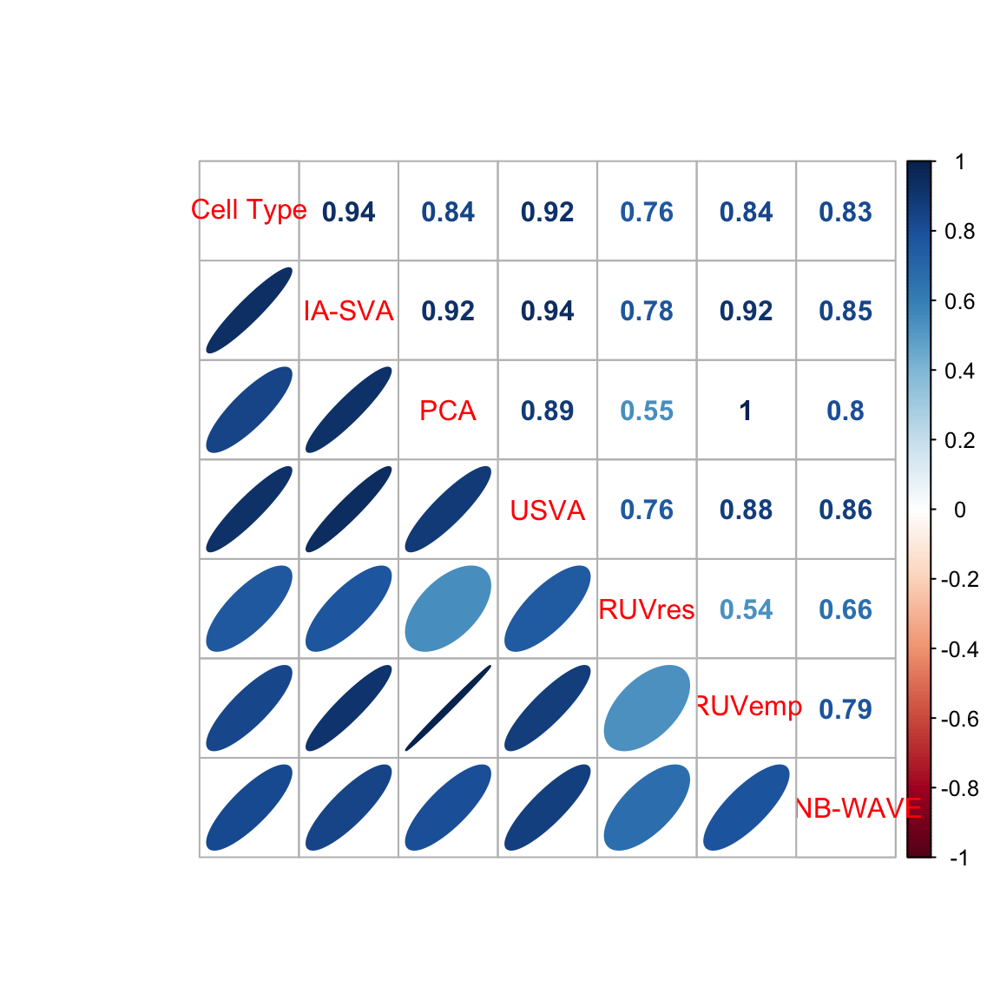
num.cells <- dim(anns)[1]
pdf(paste0("output/Brain_scRNASeq_neuron_astro_",num.cells,"_cells.pdf"), height=6, width=6)
corrplot.mixed(corr, lower="ellipse", upper="number", mar=c(0,0,1,0))
dev.off()quartz_off_screen
2 time.seconds <- c(iasva.time,pca.time,usva.time,ruvres.time,ruvemp.time,zinb.time)
names(time.seconds) <- c("IA-SVA","PCA","USVA","RUVres","RUVemp", "ZINB-WAVE")
time.secondsTime differences in secs
IA-SVA PCA USVA RUVres RUVemp ZINB-WAVE
-0.2537930 -0.1267381 -1.1145370 -73.1166251 -72.4422059 -52.8407030 barplot(t(as.matrix(abs(time.seconds))), las =2, ylab = "Run time (seconds)")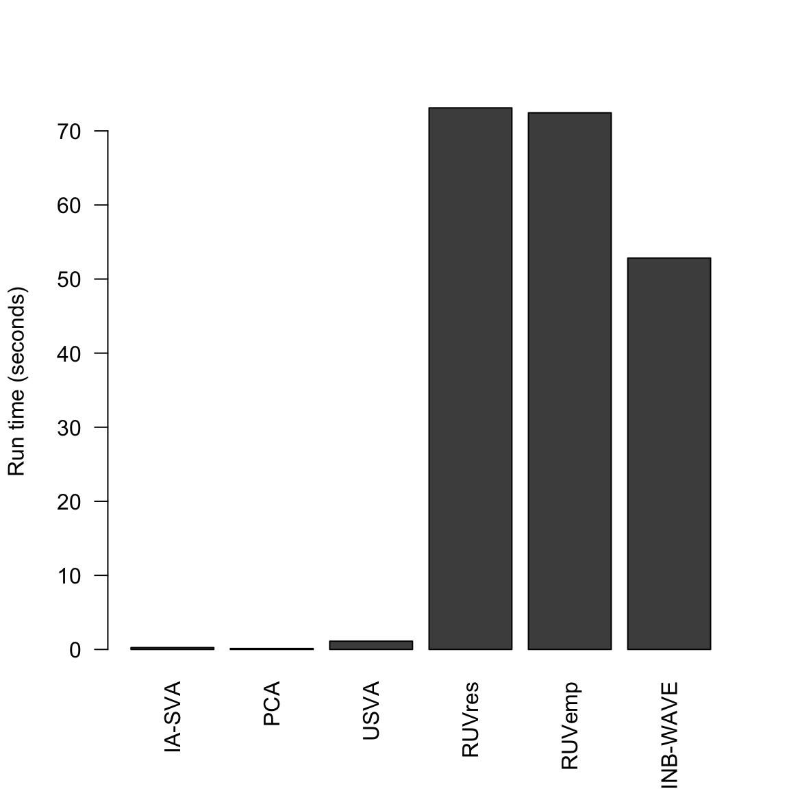
pdf(paste0("output/Brain_scRNASeq_neuron_astro_",num.cells,"_cells_run_time.pdf"), height=6, width=6)
barplot(t(as.matrix(abs(time.seconds))), las =2, ylab = "Run time (seconds)")
dev.off()quartz_off_screen
2 sessionInfo()R version 3.5.0 (2018-04-23)
Platform: x86_64-apple-darwin15.6.0 (64-bit)
Running under: macOS Sierra 10.12.6
Matrix products: default
BLAS: /Library/Frameworks/R.framework/Versions/3.5/Resources/lib/libRblas.0.dylib
LAPACK: /Library/Frameworks/R.framework/Versions/3.5/Resources/lib/libRlapack.dylib
locale:
[1] en_US.UTF-8/en_US.UTF-8/en_US.UTF-8/C/en_US.UTF-8/en_US.UTF-8
attached base packages:
[1] stats4 parallel stats graphics grDevices utils datasets
[8] methods base
other attached packages:
[1] nnet_7.3-12 zinbwave_1.2.0
[3] SingleCellExperiment_1.2.0 RColorBrewer_1.1-2
[5] DescTools_0.99.24 corrplot_0.84
[7] pheatmap_1.0.10 Rtsne_0.13
[9] RUVSeq_1.14.0 edgeR_3.22.3
[11] limma_3.36.2 EDASeq_2.14.1
[13] ShortRead_1.38.0 GenomicAlignments_1.16.0
[15] SummarizedExperiment_1.10.1 DelayedArray_0.6.1
[17] matrixStats_0.53.1 Rsamtools_1.32.2
[19] GenomicRanges_1.32.3 GenomeInfoDb_1.16.0
[21] Biostrings_2.48.0 XVector_0.20.0
[23] IRanges_2.14.10 S4Vectors_0.18.3
[25] Biobase_2.40.0 BiocGenerics_0.26.0
[27] sva_3.28.0 BiocParallel_1.14.2
[29] genefilter_1.62.0 mgcv_1.8-23
[31] nlme_3.1-137 iasvaExamples_1.0.0
[33] iasva_0.99.3
loaded via a namespace (and not attached):
[1] bitops_1.0-6 bit64_0.9-7 progress_1.2.0
[4] httr_1.3.1 rprojroot_1.3-2 numDeriv_2016.8-1
[7] tools_3.5.0 backports_1.1.2 R6_2.2.2
[10] irlba_2.3.2 DBI_1.0.0 colorspace_1.3-2
[13] prettyunits_1.0.2 bit_1.1-14 compiler_3.5.0
[16] git2r_0.21.0 glmnet_2.0-16 pspline_1.0-18
[19] expm_0.999-2 rtracklayer_1.40.3 scales_0.5.0
[22] mvtnorm_1.0-8 DESeq_1.32.0 stringr_1.3.1
[25] digest_0.6.15 foreign_0.8-70 rmarkdown_1.9
[28] R.utils_2.6.0 pkgconfig_2.0.1 htmltools_0.3.6
[31] manipulate_1.0.1 stabledist_0.7-1 ADGofTest_0.3
[34] rlang_0.2.1 RSQLite_2.1.1 hwriter_1.3.2
[37] R.oo_1.22.0 RCurl_1.95-4.10 magrittr_1.5
[40] GenomeInfoDbData_1.1.0 Matrix_1.2-14 Rcpp_0.12.17
[43] munsell_0.4.3 R.methodsS3_1.7.1 stringi_1.2.2
[46] whisker_0.3-2 yaml_2.1.19 MASS_7.3-50
[49] zlibbioc_1.26.0 plyr_1.8.4 grid_3.5.0
[52] blob_1.1.1 crayon_1.3.4 lattice_0.20-35
[55] splines_3.5.0 GenomicFeatures_1.32.0 annotate_1.58.0
[58] hms_0.4.2 locfit_1.5-9.1 knitr_1.20
[61] boot_1.3-20 softImpute_1.4 codetools_0.2-15
[64] geneplotter_1.58.0 biomaRt_2.36.1 XML_3.98-1.11
[67] evaluate_0.10.1 latticeExtra_0.6-28 foreach_1.4.4
[70] gtable_0.2.0 assertthat_0.2.0 aroma.light_3.10.0
[73] xtable_1.8-2 pcaPP_1.9-73 survival_2.42-3
[76] gsl_1.9-10.3 copula_0.999-18 iterators_1.0.9
[79] AnnotationDbi_1.42.1 memoise_1.1.0 workflowr_1.0.1
[82] cluster_2.0.7-1 This reproducible R Markdown analysis was created with workflowr 1.0.1